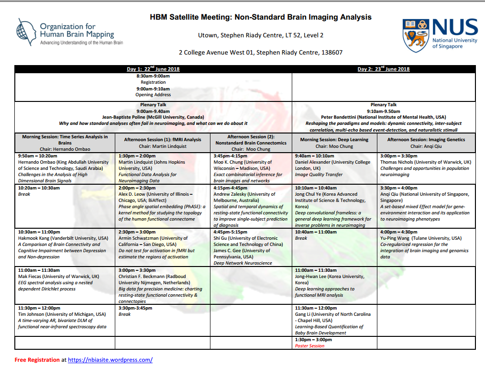
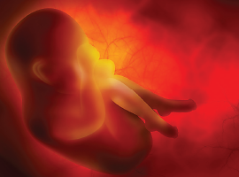
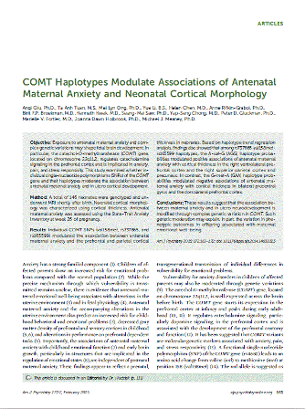
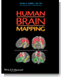
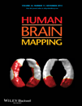
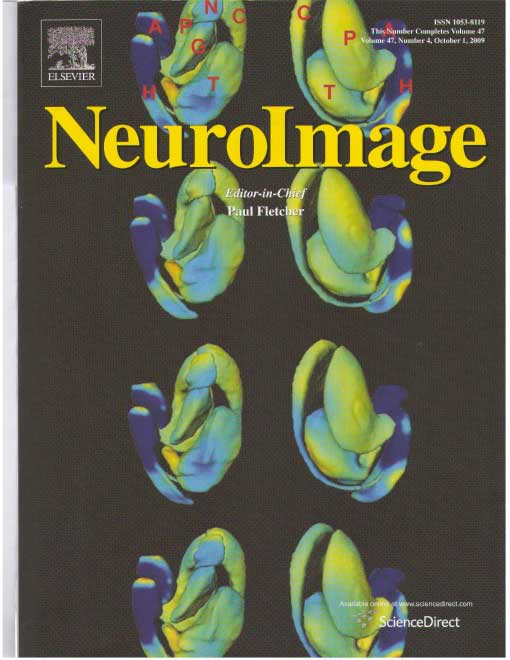
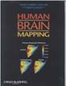
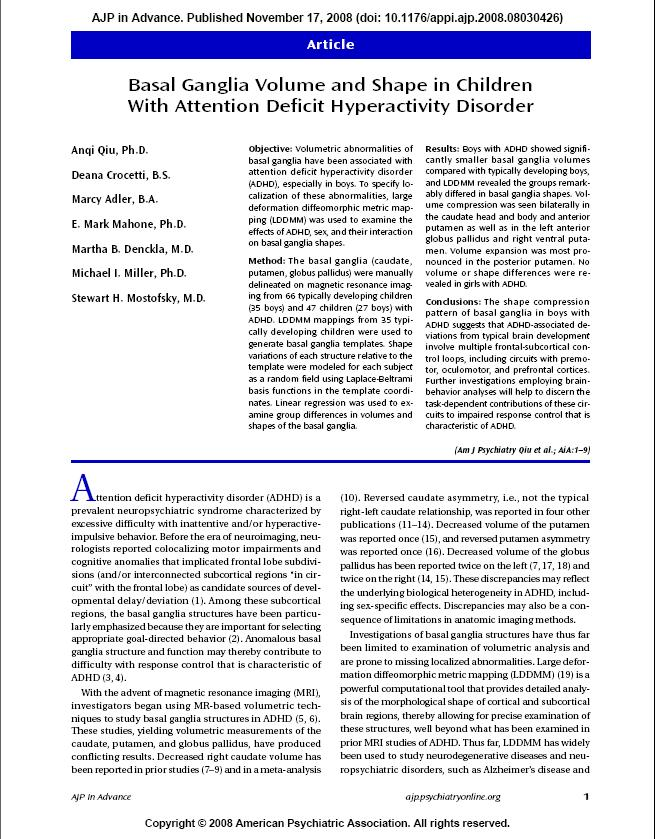

Laboratory For Medical Image Data Sciences

Latest News
A/P Qiu is appointed as Adjunct Professor of Department od Biomedical Engineering at the Johns Hopkins University.
A/P Qiu is selected as Editor in Neuroimage.
A/P Qiu is selected as treasurer at Council of Organization for Human Brain Mapping.
HBM Satellite Meeting:Non-Standard Brain Imaging Analysis
A/P Qiu is appointed as "Dean's Chair" as the recognition of her research achievements.
NUS Young Researcher Award 2016
http://www.nus.edu.sg/uawards/
{kind=link}
Piecing Together Mothers Stress and Babys Genetics to Understand Brain Development
source : Jim Hudziak, M.D. Editor of American Journal of Psychiatry
Human pregnancy is a unique biological and psychological enterprise. It can be argued that no other human life event is more important for the baby, nor more anxiety-provoking for the mother, than pregnancy. In large surveys of stressful life events, it is in the top group, just belowmarriage (1). The circumstances of pregnancy vary. Conception itself can be planned, a surprise, or, in instances of violence, forced upon a woman, and the healthy outcome of the pregnancy for both mother and child is inevitably a focus of concern.
Stressed mums may have 'moddy' babies
{kind=link}
source : straitstimes.com
{kind=link}
News in Zaobao
{kind=link}
source : zaobao.com.sg
{kind=link}
The effects of prenatal maternal depression
source : infantmentalhealth.com , The Parent Infant Center
There is strong evidence that a mother's depression during pregnancy tends to be associated with later psychological difficulties for her child, including the child's own depression. Are these later difficulties linked to the child's in utero experience and so directly related to the prenatal depression? Or are the child's difficulties more associated with its experiences after birth, perhaps to a continuation of the mother's depression, postpartum? Recent research suggests some answers to these questions.
Maternal Depression May Affect Infant Development
source : psychcentral.com
New research finds that depression among pregnant women may have an impact on their developing babies. Experts have observed that children of depressed parents are at an increased risk of developing depression themselves presumably a combination of both genetic and environmental factors.
{kind=link}
Maternal Depression May Impact Brains of Unborn Children
source : psychnews.psychiatryonline.org
 Since depression in pregnancy has been linked with an abnormal right amygdala in newborns, and that brain region is involved in mood disorders, it's possible that depression can be transmitted from mother to child in utero.
Highlights

Anqi Qiu*, Ta Anh Tuan, Mei Lyn Ong, Yue Li, Anne Rifkin-Graboi, Helen Chen, Birit FP Broekman, Kenneth Kwek, Seang-Mei Saw, Yap-Seng Chong, Peter D. Gluckman, Marielle V. Fortier, Joanna Dawn Holbrook, Michael J. Meaney, "COMT Haplotypes Modulate Associations of Antenatal Maternal Anxiety and Neonatal Cortical Morphology", American Journal of Psychiatry, 172(2):163-72, 2015. [FEATURE ARTICLE with Editors Special Comments, impact factor: 14.721]
[PDF]

Jamie Yu Jin Thong, Jia Du, Nagulan Ratnarajah, Yanhong Dong, Hock Wei Soon, Monica Saini, Ming Zhen Tan, Anh Tuan Ta, Christopher Chen and Anqi Qiu, "Abnormalities of Cortical Thickness, Subcortical Shapes, and White Matter Integrity in Subcortical Vascular Cognitive Impairment", Human Brain Mapping, 35(5):2320-2332, 2014.
[PDF]

Xianfeng Yang, Alvina Goh, Shen-Hsing Annabel Chen and Anqi Qiu, "Evolution of hippocampal shapes across the human lifespan ", Human Brain Mapping, 34(11):3075-3085, 2013.
[PDF]

Anqi Qiu, Lei Wang, Laurent Younes, Michael Harms, J. Tilak Ratnanather, Michael I. Miller, John G. Csernansky, "Neuroanatomical asymmetry patterns in individuals with schizophrenia and their non-psychotic siblings", NeuroImage, 47:1221-1229, 2009.
[PDF]

Anqi Qiu, Marc Vaillant, Patrick Barta, J. Tilak Ratnanather, Michael I. Miller, "Region of Interest Based Analysis of Cortical Thickness Variation of Left Planum Temporale in Schizophrenia and Psychotic Bipolar Disorder", Human Brain Mapping, 29(8):973-985, 2008.
[PDF]
Anqi Qiu, Laurent Younes, Michael I. Miller, "Intrinsic and Extrinsic Analysis in Computational Anatomy", NeuroImage, 39(4):1803-1814, 2008.
[PDF]
Anqi Qiu, Laurent Younes, Lei Wang, J. Tilak Ratnanather, Sarah K. Gillepsie, Gillian Kaplan, John Csernansky, Michael I. Miller, "Combining Anatomical Manifold Information via Diffeomorphic Metric Mappings for Studying Cortical Thinning of the Cingulate Gyrus in Schizophrenia", Neuroimage, 37, 821-833, 2007.
[PDF]

Anqi Qiu, Deana Crocetti, Marcy Adler, Mark Mahone, Martha Deckla, Michael I. Miller, and Stewart H. Mostofsy, "Basal ganglia volume and shape in children with ADHD", Am J Psychiatry,166:74-82, 2009. (FEATURE ARTICLE)
[PDF]